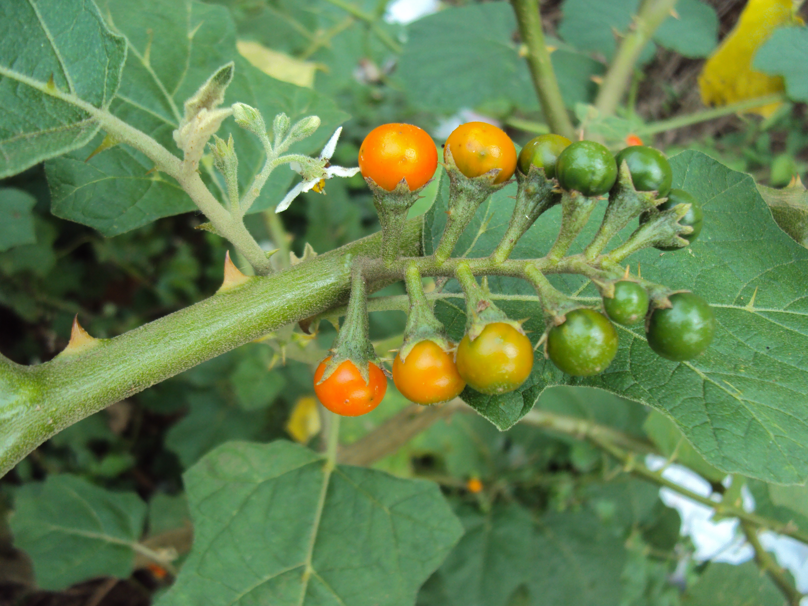

มะแว้ง
ไม้พุ่ม ขนาดเล็ก มีความสูงประมาณ 1 - 1.5 เมตร ลักษณะของลำต้นเล็กแข็ง เปลือกต้นเรียบสีน้ำตาล ยอดอ่อนและต้นอ่อนมีขนสีขาว ใบ เป็นใบเดี่ยว ออกเรียงสลับ ลักษณะใบรูปรีหรือรูปไข่ขอบขนาน ปลายใบแหลมหรือมน โคนใบมน ขอบใบหยักเว้าหยาบๆ มีขนทั่วที่ผิวใบทั้งสองด้าน แผ่นใบสีเขียว ก้านใบยาว ขนาดใบเล็กกว่าใบมะเขือพวง ดอก ออกดอกเป็นช่อกระจก บริเวณตามกิ่งหรือซอกใบ ดอกย่อยมี 5 - 10 ดอก มีสีม่วงซีด กลีบเลี้ยงเชื่อมติดกัน ปลายแยกเป็น 5 แฉกแหลม กลีบดอกมี 5 กลีบรูปไข่ ปลายแหลม เกสรตัวผู้สีเหลืองติดกันเป็นรูปกรวย ผล เมื่อดอกร่วงแล้วจะติดผล ลักษณะรูปทรงกลมเล็ก ผิวเรียบ ผลอ่อนหรือผลดิบสีขาวไม่มีลาย เมื่อแก่หรือสุกก็จะเปลี่ยนเป็นสีส้มแดง ข้างในผลมีเมล็ดแบนๆ อยู่เป็นจำนวนมาก
มะแว้งต้นสามารถขยายพันธุ์ได้ด้วยการเพาะเมล็ด โดยการหยอดเมล็ดให้ลึกประมาณ 0.5-1 เซนติเมตรในถาดเพาะ (ซึ่งอุณหภูมิที่มะแว้งต้นเจริญเติบโตได้ดีคือ 25-32 องศาเซลเซียส ความชื้นสัมพัทธ์ 80 เปอร์เซ็นต์ และมีร่มเงาประมาณ 50 เปอร์เซ็นต์) มะแว้งต้นจะใช้เวลางอกนาน 1-2 สัปดาห์หรือมากกว่านั้น เมื่อต้นมะแว้งมีใบจริง 2-3 ใบ หรือมีความสูง 15-20 เซนติเมตรแล้วจึงเตรียมย้ายลงแปลงปลูก ซึ่งวิธีการปลูกมีดังนี้ เตรียมดินโดยไถพรวนให้ร่วมซุยกำจัดเศษวัชพืช และใส่ปุ๋ยคอกแล้วไถพรวนอีกครั้ง ขุดหลุมขนาด 15x15x15 เซนติเมตร แล้วนำต้นกล้าที่ได้ลงปลูกแล้วกลบดินรดน้ำให้ชุ่มโดยใช้ระยะปลูกระหว่าต้น 1 เมตร มะแว้งต้นจะออกดอกเมื่อมีอายุประมาณ 2-3 เดือน สามารถเก็บผลสดได้ประมาณ 2-4 สัปดาห์หลังดอกบาน
รดน้ำให้ดินมีความชื้นสม่ำเสมอ โดนแสงแดดรำไร
ใบ รสขื่นขม เป็นยาบำรุง แก้วัณโรค แก้ไอ
ทั้งต้น รสขื่นเปรี้ยว แก้โลหิตออกทางทวารหนัก ทวารเบา ขับปัสสาวะ
ผล รสขมขื่นเปรี้ยว บำรุงน้ำดี รักษาโรคเบาหวาน แก้ไอ แก้เสมหะ แก้น้ำลายเหนียว ขับปัสสาวะ รักษาโรคทางไต เจริญอาหาร
ราก รสขมขื่นเปรี้ยว แก้น้ำลายเหนียว แก้ไอ กัดและขับเสมหะ ขับปัสสาวะ ขับลม แก้โลหิตออกทางทวารหนัก ทวารเบา
ควรเก็บรักษาในที่สะอาดเย็นไม่อับชื้น มีอากาศถ่ายเทได้ดีและไม่ถูกแสงแดด - เก็บในภาชนะที่ปิดสนิท ป้องกันการ ปนเปื้อนและแมลงเข้าทำลาย